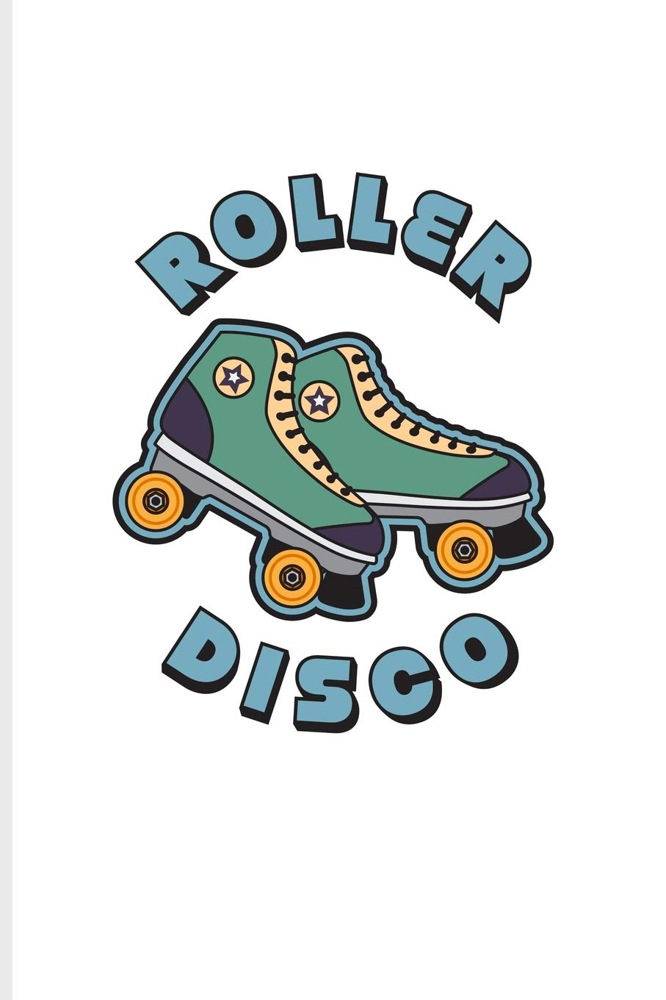
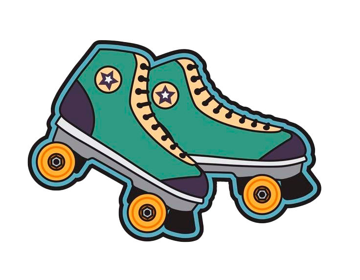

This is our school projekt dans dans dans. The projekt was about the dans swing where we had make a website for a dance studio. to make the dans swing more exating it was made into swing on skates. In the projekt i helped with the whole process and also did som coding, but the thing i was in charge of was the logo. the logo you see to your right is the finsih produkt.
process of the logo. i started by finding some roller skates that had the colors from our moodboard. the i found the image you can see underneith by YeoYs Retro. i then cut out the roller skates and made a background that again match the moodboard and last i added the text and at first it was not round enough, as the final produkt.
 